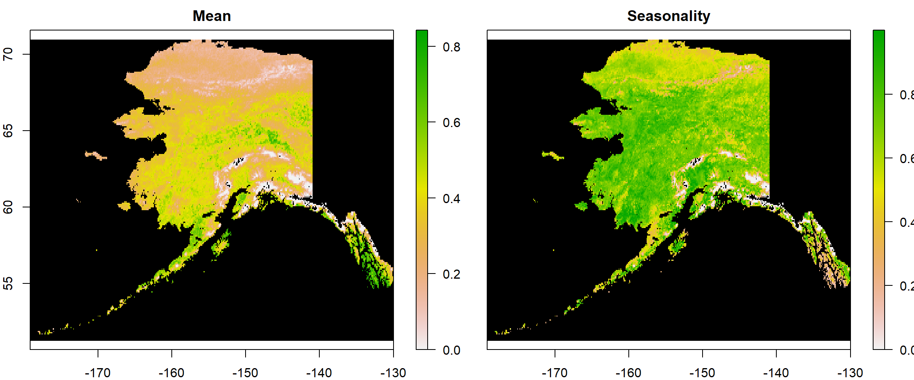
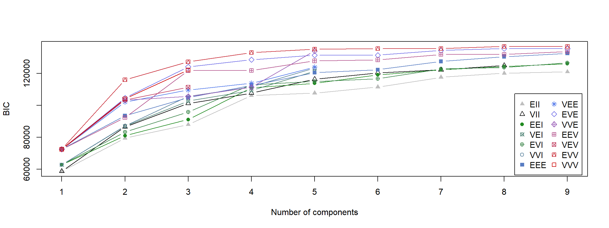
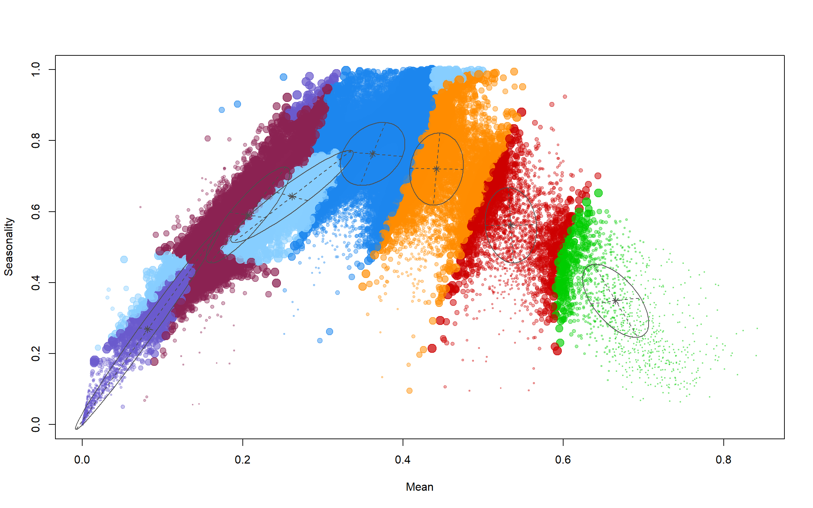
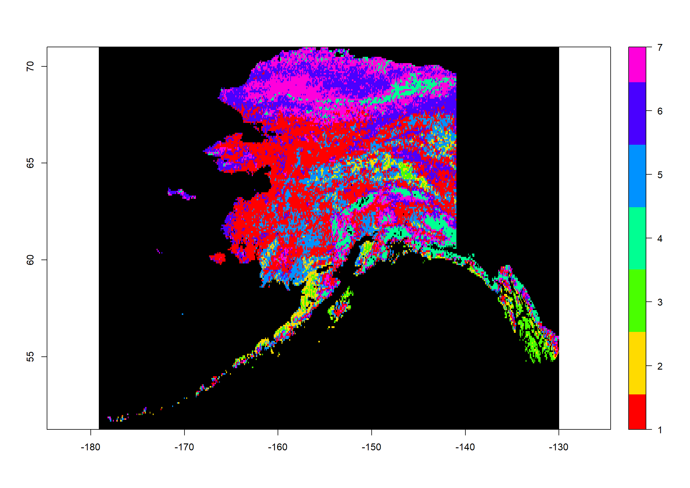
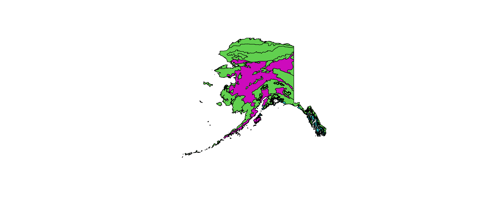
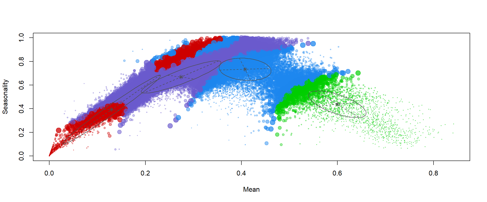
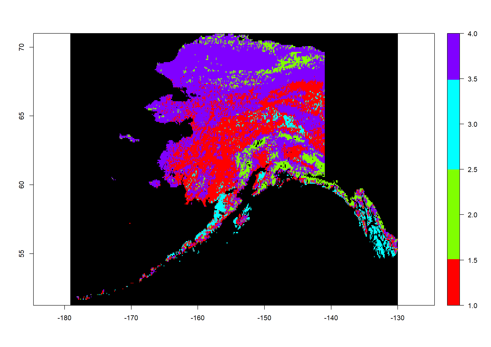

Cluster Analysis
Preparing The Work
Let’s create our basic structure for this document:
Head
Not much has changed in the head when compared to our last exercise. We merely change the contents and and the edit tag, since the rest stays the same for the entire project.
# ####################################################################### #
# PROJECT: [BFTP] Identifying Biomes And Their Shifts Using Remote Sensing
# CONTENTS: Functionality to identify clusters of NDVI mean and seasonality
# AUTHOR: Erik Kusch
# EDIT: 18/03/20
# ####################################################################### #
Preamble
I am keeping the same preamble as last time because we will need to index the data and the plot directory in this exercise. Our preamble then looks like this:
rm(list=ls()) # clearing the entire environment
Dir.Base <- getwd() # identifying the current directory
Dir.Data <- paste(Dir.Base, "Data", sep="/") # generating the folder path for data folder
Dir.Plots <- paste(Dir.Base, "Plots", sep="/") # generating the folder path for figures folder
Notice, that we do not call the function dir.create() this time. We don’t need to do so, because we already created the two directories established above in our last exercise. Usually, we would create this entire analysis of your BFTP project in one R code script. In this case, we would only have one preamble which defines and creates directories instead of doing this step for every single sub-part of the analysis. Alas, we want to break this down for you. Therefore, you see this preamble here and will again in the next exercise.
Again, this is where would load packages, but I am going to install and load the necessary packages when needed to show you what they are good for. Personally, I recommend you always load all necessary packages at the beginning of your code file and leave comments as to what you load them for. This will make it easier to remove packages you don’t need anymore when you change things.
Coding
Again, all of the important Coding happens after the head and the preamble are written and run in R. Basically, this is the rest of this document once more.
Cluster Analysis
Cluster analyses come in many forms. Here, we are interested in a k-means clustering approach. These approaches identify $k$ (a number) clusters. One of the most prominent ways to do this in R is undoubtedly the mclust R package. Clusters can be thought of as groupings of data in multi-dimensional space. The number of dimensions is equal to the number of clustering components. In the mclust R package, the characteristics of these clusters (orientation, volume, shape) are, if not specified otherwise, estimated from the data.
mclust provides the user with a very autonomous process of model calculation and selection. First, if not specified otherwise, mclust calculates all available models for a range of cluster component numbers (by default one to nine clusters). Secondly, once the models are established, mclust selects the most appropriate of the models according to their respective Bayesian Information Criterion (BIC) value. The BIC is an indicator of model quality: the lower the BIC, the better the model fits the data. Conclusively, mclust chooses the model with the lowest BIC available for clustering the data.
Loading Data
Before we can get started with our analysis, we have to load our NDVI mean and seasonality data (see last exercise) back into R, we do this as follows:
library(raster) # the raster package for rasters
Mean1982_ras <- raster(paste(Dir.Data, "1982Mean.nc", sep="/")) # loading means
Season1982_ras <- raster(paste(Dir.Data, "1982Season.nc", sep="/")) # loading seasonalities
Now that we have loaded the data into R, it is time to introduce you to another useful feature of the raster package - the stack. With a stack of rasters, you can do exactly what the name suggests, stack rasters of the same resolution, and extent into one R object. You do this by calling the stack()function in R:
All1982_ras <- stack(Mean1982_ras, Season1982_ras) # creating a stack
names(All1982_ras) <- c("Mean", "Seasonality") # assign names to stack layers
All1982_ras
## class : RasterStack
## dimensions : 237, 590, 139830, 2 (nrow, ncol, ncell, nlayers)
## resolution : 0.083, 0.083 (x, y)
## extent : -179, -130, 51, 71 (xmin, xmax, ymin, ymax)
## crs : +proj=longlat +datum=WGS84 +no_defs
## names : Mean, Seasonality
## min values : 0, 0
## max values : 0.84, 1.00
As you can see, this object contains both rasters as layers which we have already assigned names to.
Now let’s see how plotting works with this. This time, I am adding a couple of arguments to the plot() function to make the plots nicer than before:
plot(All1982_ras, # what to plot
colNA = "black", # which colour to assign to NA values
legend.shrink=1, # vertical size of legend
legend.width=2 # horizontal size of legend
)

Using stacks makes plotting easier in R if you want to plot more than one raster at a time.
Data Extraction
We’re now ready to extract data from our data sets. mclust let’s us assess multi-dimensional clusters but wants the data to be handed over in one file - as a matrix, to be precise. Let’s see what happens when we just look the first few (head()) values (values()) of our raster stack:
head(values(All1982_ras))
## Mean Seasonality
## [1,] NA NA
## [2,] NA NA
## [3,] NA NA
## [4,] NA NA
## [5,] NA NA
## [6,] NA NA
As you can see, the data gets extracted but there are NA values here. This is because the top-left corner of our rasters (which is where values start) contains a lot of NA cells.
Let’s see what kind of object this is:
class(values(All1982_ras))
## [1] "matrix" "array"
It is a matrix! Just what mclust wants! Let’s actually create that as an object:
Vals1982_mat <- values(All1982_ras)
rownames(Vals1982_mat) <- 1:dim(Vals1982_mat)[1] # rownames to index raster cell number
Finally, let’s carry out a sanity check to make sure that we really have ported all values from both source rasters to our matrix. For this to be the case, the rownumber of our matrix (dim()[1]) needs to be the same as the amount (length()) of values (values()) in our rasters:
dim(Vals1982_mat)[1] == length(values(Mean1982_ras)) &
dim(Vals1982_mat)[1] == length(values(Season1982_ras))
## [1] TRUE
This checks out!
Data Prepartion
As you remember, there were plenty of NA values in our data set. No cluster algorithm can handle these. Therefore, we need to get rid of them. This is done as follows:
Vals1982_mat <- na.omit(Vals1982_mat) # omit all rows which contain at least one NA record
dim(Vals1982_mat) # new dimensions of our matrix
## [1] 39460 2
This seriously cut our data down and will speed up our clustering approach a lot.
Cluster Identification
Let’s install and load the mclust package.
install.packages("mclust")
library(mclust)
Cluster Model Selection
Let’s start with the mclust functionality to identify the best fitting clustering with a range of 1 to 9 clusters. To do so, we first need to identify the BIC fit for all of our possible cluster models. mclust does this automatically:
dataBIC <- mclustBIC(Vals1982_mat) # identify BICs for different models
print(summary(dataBIC)) # show summary of top-ranking models
## Best BIC values:
## EVV,8 EVV,9 EVE,8
## BIC 136809 136800.2 135504
## BIC diff 0 -8.6 -1304
The output above tells us that the best performing model was of type EVV (ellipsoidal distribution, equal volume, variable shape, and variable orientation of clusters) identifying 9 clusters.
Let’s see a visual overview of this:
plot(dataBIC)
 Here, you can see different models compared to each other given certain numbers of clusters that have been considered.
Now we can build our model:
mod <- Mclust(Vals1982_mat, # data for the cluster model
G = 7 # BIC index for model to be built
)
We now have our full model! How many clusters did it identify?
mod$G # number of groups/clusters in model
## [1] 7
No surprises here, we’ve got 7 clusters.
Now let’s look at the mean values of the clusters:
mod[["parameters"]][["mean"]] # mean values of clusters
## [,1] [,2] [,3] [,4] [,5] [,6] [,7]
## Mean 0.36 0.53 0.67 0.081 0.44 0.26 0.21
## Seasonality 0.76 0.56 0.35 0.269 0.72 0.64 0.59
These can be interpreted biologically, but I will leave that to you.
Now let’s see how well these clusters distinguish the mean-seasonality space:
plot(mod, what = "uncertainty")

How do we map this? We predict our clusters for our initial data as follows:
ModPred <- predict.Mclust(mod, Vals1982_mat) # prediction
Pred_ras <- Mean1982_ras # establishing a rediction raster
values(Pred_ras) <- NA # set everything to NA
# set values of prediction raster to corresponding classification according to rowname
values(Pred_ras)[as.numeric(rownames(Vals1982_mat))] <- as.vector(ModPred$classification)
Pred_ras
## class : RasterLayer
## dimensions : 237, 590, 139830 (nrow, ncol, ncell)
## resolution : 0.083, 0.083 (x, y)
## extent : -179, -130, 51, 71 (xmin, xmax, ymin, ymax)
## crs : +proj=longlat +datum=WGS84 +no_defs
## source : memory
## names : layer
## values : 1, 7 (min, max)
As you can see, this has the same extent and resolution as our source rasters but the values range from 1 to 7. These are our cluster assignments.
Now let’s plot this:
colours <- rainbow(mod$G) # define 7 colours
plot(Pred_ras, # what to plot
col = colours, # colours for groups
colNA = "black", # which colour to assign to NA values
legend.shrink=1, # vertical size of legend
legend.width=2 # horizontal size of legend
)

How often do we observe which assignment?
table(values(Pred_ras))
##
## 1 2 3 4 5 6 7
## 13101 1902 1118 2939 5608 8047 6745
Pre-Defined Number
As biologists, we have got decades of work already present concerning biome distributions across the Earth. One such classification are the Terrestrial Ecoregions of the World (\url{https://www.worldwildlife.org/publications/terrestrial-ecoregions-of-the-world}). We want to identify how many biomes this data set identifies across Australia.
Firstly, we download the data and unpack it:
# downloading Terrestrial Ecoregion Shapefile as zip
download.file("http://assets.worldwildlife.org/publications/15/files/original/official_teow.zip",
destfile = file.path(Dir.Data, "wwf_ecoregions.zip")
)
# unpacking the zip
unzip(file.path(Dir.Data, "wwf_ecoregions.zip"),
exdir = file.path(Dir.Data, "WWF_ecoregions")
)
Secondly, we load the data into R:
# loading shapefile for biomes
wwf <- readOGR(file.path(Dir.Data, "WWF_ecoregions", "official", "wwf_terr_ecos.shp"),
verbose = FALSE)
Thirdly, we need to limit the global terrestrial ecoregion shapefile to the state of Alaska and need our Alaska shapefile for this:
Shapes <- readOGR(Dir.Data, # where to look for the file
"ne_10m_admin_1_states_provinces", # the file name
verbose = FALSE) # we don't want an overview of the loaded data
Position <- which(Shapes$name_en == "Alaska") # find the english name that's "Alaska"
Alaska_Shp <- Shapes[Position,] # extract the Alaska shapefile
Alaska_Shp <- crop(Alaska_Shp, # what to crop
extent(-190, -130, 51, 71)) # which extent to crop to
Now, we need to limit the global biome shapefile to the shape of Alaska:
wwf_ready <- crop(wwf, extent(Alaska_Shp)) # cropping to Alaska extent
wwf_ready <- intersect(Alaska_Shp, wwf) # masking of two shapefiles
plot(wwf_ready, # plotting final shape
col = wwf_ready@data[["BIOME"]] # use BIOME specification for colours
)

We first identify the BICs:
# identify BICs for different models
dataBIC2 <- mclustBIC(Vals1982_mat,
G = length(unique(wwf_ready@data[["G200_BIOME"]])))
print(summary(dataBIC2)) # show summary of top-ranking models
## Best BIC values:
## EVV,4 VVE,4 EVE,4
## BIC 133035 132345 125463
## BIC diff 0 -690 -7572
As you can see, the shapefile gives us 4 clusters across Alaska even though the map only shows 3. The fourth biome is only represented by a single polygon across all of Alaska and we might want to reduce the set to 3.
For now, we are running with the idea of 4 clusters:
mod2 <- Mclust(Vals1982_mat, # data for the cluster model
G = 4 # BIC index for model to be built
)
We now have our full model!
Now let’s look at the mean values of the clusters:
mod2[["parameters"]][["mean"]] # mean values of clusters
## [,1] [,2] [,3] [,4]
## Mean 0.41 0.13 0.60 0.27
## Seasonality 0.73 0.39 0.44 0.67
Again, I leave the biological interpretation to you.
Finally, we will plot our assignments in mean-seasonality space:
plot(mod2, what = "uncertainty")

Again, let’s predict our clusters for our initial data as follows:
ModPred2 <- predict.Mclust(mod2, Vals1982_mat) # prediction
Pred2_ras <- Mean1982_ras # establishing a rediction raster
values(Pred2_ras) <- NA # set everything to NA
# set values of prediction raster to corresponding classification according to rowname
values(Pred2_ras)[as.numeric(rownames(Vals1982_mat))] <- as.vector(ModPred2$classification)
Pred2_ras
## class : RasterLayer
## dimensions : 237, 590, 139830 (nrow, ncol, ncell)
## resolution : 0.083, 0.083 (x, y)
## extent : -179, -130, 51, 71 (xmin, xmax, ymin, ymax)
## crs : +proj=longlat +datum=WGS84 +no_defs
## source : memory
## names : layer
## values : 1, 4 (min, max)
As you can see, this has the same extent and resolution as our source rasters but the values range from 1 to 4. These are our cluster assignments.
Now let’s plot this:
colours <- rainbow(mod2$G) # define 4 colours
plot(Pred2_ras, # what to plot
col = colours, # colours for groups
colNA = "black", # which colour to assign to NA values
legend.shrink=1, # vertical size of legend
legend.width=2 # horizontal size of legend
)

How often do we observe which assignment?
table(values(Pred2_ras))
##
## 1 2 3 4
## 12223 4066 2327 20844
Saving Workspace
What Is It And Why Do We Do It?
The workspace records all of our elements in R. Since we want to pick up from this point in our next exercise, we want to save the workspace and restore it at a later point to assess all of our elements again.
Saving And Loading The Workspace
Saving a workspace goes as follows:
# save workspace
save.image(file = (paste(Dir.Base, "Workspace.RData", sep="/")))
Now let’s load it again:
rm(list=ls()) # clean workspace
load(file = "Workspace.RData") # load workspace
ls() # list elements in workspace
## [1] "Alaska_Shp" "All1982_ras" "colours"
## [4] "dataBIC" "dataBIC2" "Dir.Base"
## [7] "Dir.Data" "Dir.Plots" "Mean1982_ras"
## [10] "mod" "mod2" "ModPred"
## [13] "ModPred2" "Position" "Pred_ras"
## [16] "Pred2_ras" "Season1982_ras" "Shapes"
## [19] "Vals1982_mat" "wwf" "wwf_ready"
All our files are back!